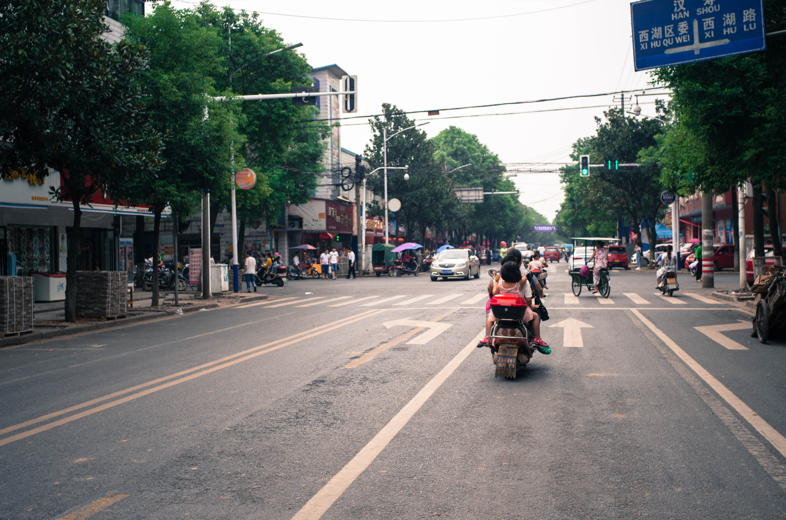
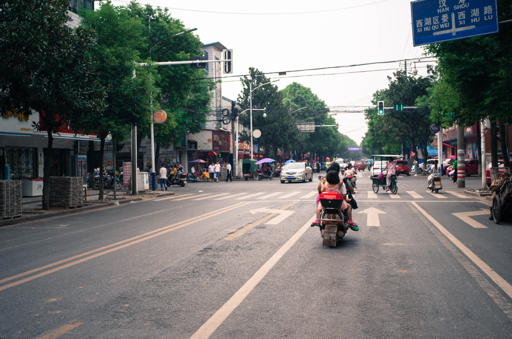

Return to China
Three years ago when I was teaching English in a university in China I came to the realization that teaching English would not allow me to pay off my student loans, and that the government jobs I wanted were so competitive that I could not afford to wait around for my lucky break. A friend from college convinced me that Javascript was worth learning, and after about a year of study I came to california to attent a coding bootcamp and eventually to work in a startup.
Now I have been working in Silicon Valley for two years and in that time I haven't been back to China once. So my wife and I decided that it was time to visit and bring our six month old daughter to meet the Chinese side of her family.
The process of getting to China was one of the wildest I've ever experienced. The twelve hour flight to Beijing arrived late which endangered our chance of making the transer to Changsha. We ran through the Beijing international airport to our terminal only to find that the flight had been indefinitely delayed. Sweaty, exhausted, and stiff from a long flight we waited at the terminal for three hours before our flight boarded.
Finally in Changsha, my wife brought our daughter and carry-on bags to her mother, who was waiting outside, while I waited for our checked bags. Half of the luggage came out, and then there was nothing for a while, and then the baggage train stopped completely. Soon we heard the distinctive sound of someone being insulted in Changsha dialect, which has a particularly fierce tone. One of the passengers was yelling at an employee who could not provide any information about our luggage. After some confused waiting the luggage train started up again and our bags came out.
It was twelve thirty at night and we were finally in the car that my wife's mom had arranged to take us to her home town, which is a four hour drive. I was almost ready to relax when the driver got on the road leaving the airport going the wrong direction. He did eventually realize this with the help of the GPS and started a u-turn at a fork in the road. Mid u-turn he stalls his car and we are sitting in the middle of the road facing oncoming traffic. At this point I was wide awake despite having not slept for seventeen hours. Our driver did eventually make it onto the highway, where he proceeded to oscillate between fourty and nintey kmph, drift haphazardly from one lane to the other, drive in the middle of the highway, and make lane changes without warning into lanes where much faster cars were trying to pass us. It was a harrowing experience to say the least, and it took us about two hours longer to get to our destination than it should have.
Amazingly we made it to my wife's aunt's house alive, and after a couple hours of sleep I found that there was a nice fog outside.
The weather wasn't the only foggy thing that day. I was tired from travelling so I spend most of my time laying on the couch reading The Futurological Congress by Stanislaw Lem. After a lunch of napa cabbage and pork belly, I went outside to take some photos in the sunlight. The residents of this street planted flowers in front of their houses which attracted butterflies. I was taking pictures of some of the flowers when I noticed that they were planted around the entrance to a latrine.
Not long after that I was overcome by fatigue and slept for a few hours. I don't remember exactly how the rest of that day went. I remember that my wife's uncle came home with a cartload of lotus pods. Later on, her aunt and another woman worked at extracting the lotus seeds together. They would poke a bamboo fork through the pod and bang it on the edge of a bucket, knocking the seeds into the bucket. I also got to see my wife's neice, an adorable little girl named Xingyi who used to call me "jay-mu-shee", but she said didn't remember me.
We were anxious to try the rice noodles which are the specialty dish of my wife's region so we took the vespa into town. Along the way I saw that the farmers were growing and harvesting sesame. There were dense fields of sesame which would be cut and placed upright in bundles to dry.
Late in the afternoon my wife's uncle came to pick us up an bring us to his house. We were to spend the next few days at his house with my wife's father. We got ourselves set up in our new location and not long afterwards my wife's father arrived. We had dinner and everyone went to bed very early. The next morning there was a heavy fog.
The next few days were fairly uneventful. We were far from town in the countryside without internet and without transportation. The reason we were there was so that my wife could spend time with her father and grandparents, but other than that there was little to do. I watched my wife's grandmother walk down the rows of sesame slicing them and bundling them or throwing them in a cart. The bundles were placed on the concrete courtyard outside the house to dry.
I also examined the plants that grew around the house to identify which ones were wild and which were cultivated. Cultivated plants on the property included soy beans, taro, strawberries, three-color amaranth, blue potatoes, multiple kinds of hot peppers, cotton, sesame, sugar cane, sorghum, rice, loofa melon, winter melon and mandarin oranges. I took photos of the wild ones for later identification.
My wife's grandparents were preparing a mixture of rice and sorghum to be crushed into fish feed. I watched them pack up three big bags of the mixture which apparently would cost hundreds of RMB each if bought on the market
There were always a few stray dogs running about.
On the day of mid autumn festival I woke up to a beautiful sunrise followed by a hearty bowl of noodles.
I had been getting a restless in the house so my wife suggested I go into town with her father and take photos at the market. It was an excellent idea, and I practiced the skill of taking pictures of people without their permission, which I have always felt terrible doing.

 

Later on in the day I took a short walk down the street with my wife. I am always interested by how each house has a different configurations of land, water and crops.
The next day was my wife's birthday and we went out to eat. During her birthday lunch I tried snake for the first time.
Finally our time at my wife's father's home was over. We returned to her aunt's house to spend one more day in Changde before we head to Changsha. I finally got a picture of the guy who herds his little ducks around with a stick, and at the end of the day we took a short walk with Xingyi.
On the morning of the day that we were to leave for Changsha my wife's uncle took me to go see his Lotus patch. On the way there I saw an old house with a large cotton field in front and a bamboo grove in back. My wife's uncle said that he walks around in the lotus patch with a bucket collecting the seed pods. On the way back I noticed a pretty patch of taro and also that my wife's uncle had had cupping done on his back.
We took a car into Changsha the next day where we would spend one night before our trip to Qianyang ancient city near Huaihua. That night we went to an amazing historical restaurant where we had bullfrog, sweet potato cellophane noodles and stinky tofu, and then we went to a bar with some of my wife's friends.
Chinese bars are a lot of fun: there are dancers, signers, rappers and performances of all kinds. Everyone is in good spirits and if you walk around the bar people "cheers" you and pour you drinks. Our table had bottle service and we were drinking something that said "scottish whiskey" on the label whose black cap said "scotch whiskey". It tasted like shitty scotch and I drank it straight to avoid filling up on iced tea in the middle of the night. At some point an employee of the bar brought us a new bottle of the stuff, as we were almost out, and this new bottle had the same label but a different colored cap. I tried this new bottle and it had a completely different taste. It was less alcoholic and had a weird perfumey overtone. That's when I realized we had been drinking fake Chinese produced alcohol of unknown origin.
When we left to walk back to the hotel we were accompanied by a fellow that my wife's friends had met in the bar. He realized that I could speak Chinese and so, naturally, the conversation quickly turned to gun running.
"Guns are easy to get in the US, do you think you could bring some guns into China?" He said.
"Wow, ummm, probably not, but that is interesting, there is a market for guns here?" I replied
"Oh yeah, you can make hundreds of thousands of RMB with one shipment. The thing the government fears most is an armed populace." (政府最怕的就是有枪的人民)
"Ah yes, I suppose so. So are there any other good markets aside from guns?"
"Sure, there is also drugs."
I don't know if he was serious or was a government agent, but needless to say I did not give him my contact info.
The next day I felt terrible. I don't know what kind of poison I had been drinking but "hung over" definitely does not do the feeling justice. We went to the high speed rail station and got on a train to Huaihua, in western Hunan, to begin our journey to Qianyang.
Once we got to Huaihua we met a driver in the train station who agreed to take us directly to Qianyang in his private car which saved us a trip to the bus station. That day I progressively felt worse and worse until the evening when I realized that my windpipe and larynx were becoming inflamed. That was the start of an amazingly intense cold/flu/bronchitis or whatever, that would last with me for the entire rest of the trip.
Qianyang is a very small ancient town that is a mix of four hundred year old wooden houses from the Qing dynasty and Mao era concrete homes. It is a fascinating place historically, and despite the fact that I was under the weather I was at least able to walk around a little bit and take some photos.
After a couple of fairly uneventful days in Qianyang we returned to Changsha. The first couple of days in Changsha were a bit hazy for me because I was so sick, but eventually we were able to make it out to Orange Island for a nice walk. Orange Island is an island in the middle of the Xiang river which bisects Changsha. On the way back to the hotel my wife took the camera to take some shots of people.
The next day I decided to go to Yuelu shan to see Yuelu Shuyuan, a university that dates back to the Song dynasty. It was a very hot day so we took a car up the mountain and it was hazy so there wasn't much of a view from the top. The university itself was a typical old style Chinese building with courtyards and gardens. A lot of it seemed to be added recently and I wasn't too impressed with the place. It would probably be much more fulfilling to read about the history of the school and understand its significance than to just walk around the grounds.
On my last day in Changsha I went with my wife to spend a day with some of her classmates who live in the city. It was not a remarkable day. We ate lunch at her friend's house and went shopping. I tried my hand at taking photos of people again, this time with limited sucess.
At the end of the day we went to a special place for my sendoff dinner. It is a neighborhood next to the university where I used to teach English that turns into a veritable street food festival at night. The food vendors are so dense you can barely walk through them and the food is amazing. The culture of going to these places at night and spending the whole evening eating a huge variety of delicious food is something I truly love and miss.
The next day I flew back to California. My return to China was not very eventful but in retrospect it had a significant effect on me. Living in a place without the internet where I watched farmers work the land every day gave me a lot of perspective on my life. In addition, the chaos of the city and the overall lack of sanitation led me to appreciate my somewhat boring but safe and predictable life. I did not appreciate constantly having to breathe second hand smoke while suffering from bronchitis, and I was contantly worried about the toxicity of the things surrounding my daughter. At the same time the transportation, the art everywhere and the food culture reminded me of those things that the US lacks.
james.howe.edwards@gmail.com